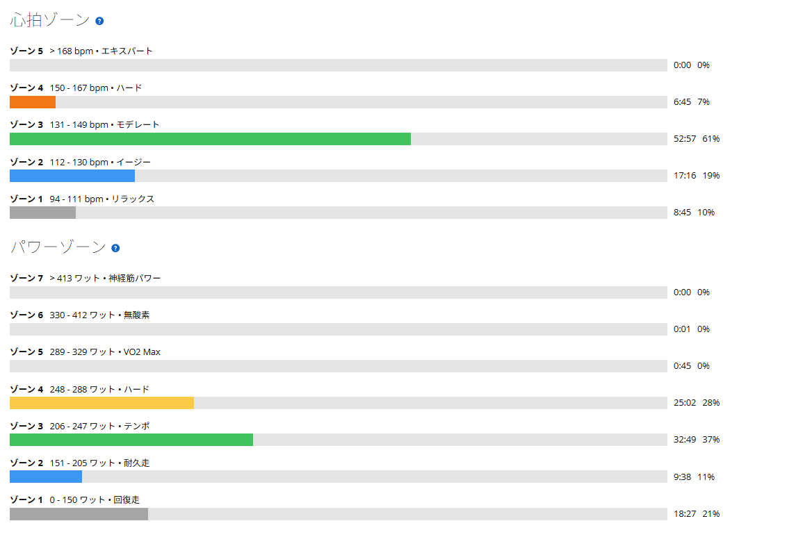

20分×3本。最後は高ケイデンスを捨てて246Wまで戻した
今日はローラーで20分×3本。前日は実走で高強度、太平では6分58秒・330Wを出している。その翌日にどこまで持続系を積めるかという日だった。狙いはFTP走のように限界まで追い込むことではなく、テンポ〜SST下限で合計60分の仕事量を積むこと。
結果は1本目244W、2本目240W、3本目246W。かなりきれいに揃った。ただ、この数字だけ見ても分からないことがある。1本目と3本目では、踏み方がまったく違った。

44.63km・NP225W・TSS96.5
- 全体44.63km / 1時間26分44秒 / 運動負荷168
- 負荷平均210W / NP225W / IF0.819 / TSS96.5 / 最大362W / 20分最大245W
- 心拍・回転平均135bpm / 最大152bpm / 平均83rpm
- 環境平均29.7℃ / 最高31.0℃ / 推定発汗1,401ml
- 効果有酸素TE3.8 / 無酸素TE0.0
メニューは20分を3本、レストは各5分。ONだけで合計60分になる。パワーゾーンはゾーン4が25分02秒、ゾーン3が32分49秒。この2つだけで57分51秒あった。今日狙っていた「テンポ〜SST下限を長く踏む」という内容には、かなり近い配分になっている。

1本目は244W。高めのケイデンスで回した
- 1本目20分01秒 / 244W / 心拍136〜144bpm / 86rpm
前半10分くらいは、意識してケイデンスを高めにして回した。最近は低めの回転でもパワーを出せる感覚が出てきている。だからこそ今日は最初から低回転へ寄せるのではなく、「ちゃんと回転でもパワーを作れるか」を少し試してみたかった。
1本目が終わった時点では、まだ余裕があると思った。20分×3本。この時点では「思ったよりいけるかも」くらいの感覚である。
2本目は240W。ここから一気にきつくなった
- 2本目20分01秒 / 240W / 心拍144〜150bpm / 86rpm
ところが2本目。平均ケイデンスは1本目と同じ86rpm、パワーは4W低いだけ。数字だけなら大差ない。でも体感はかなり違った。2本目へ入ってから急にきつくなってきて、1本目終了時の余裕はどこへ行ったのかという感じである。
20分を1本だけなら余裕がある。でも5分休んで、また20分。そこで負荷が一段積み上がる。今回3本やった意味は、まさにここにあった。
3本目は246W。高ケイデンスを捨てた
- 3本目20分01秒 / 約246W / 心拍147〜152bpm / 77rpm
ここが今日いちばん面白かった。3本目に入って高めのケイデンスで回そうとすると、全然パワーが出ない。速度も出ない。回しているのに前へ進まない感じである。
そこで「今日は高ケイデンスじゃないな」と切り替えた。80rpm前後、さらに70rpm台。少し低めの回転で、一踏みごとに力を伝える。するとパワーが戻った。結果として3本目が246Wで、3本の中で一番高い。
心拍は136→144→147。失速ではなく作り方を変えた
- パワー244W → 240W → 246W
- 平均心拍136bpm → 144bpm → 147bpm
- 平均ケイデンス86rpm → 86rpm → 77rpm
並べるとよく分かる。心拍はきれいに上がり続けているのに、パワーは落ちていない。最後に失速したわけではなく、むしろ疲労が積み上がった状態で、踏み方を変えてパワーを戻したということになる。
前日は太平で6分58秒・330Wという高強度実走をやっている。その連日でも合計60分をまとめられたので、連日耐性という意味でも良い内容だった。
ケイデンスは固定しない。20分×3本はその練習になる
以前なら「高ケイデンスの方がいいのか、低ケイデンスの方がいいのか」と考えがちだった。最近は少し違う。今日は1本目の前半で高めの回転を意識して244W。3本目では高回転では全然パワーが出ず、70〜80rpmへ落として246W。同じ自分でも、疲労状態によって使いやすいケイデンスが変わる。これが今日の一番大きな収穫だった。
高ケイデンスが正解でもないし、低ケイデンスが正解でもない。その時の脚の状態や勾配、疲労に合わせて「今日はどの回転数なら一番うまく力を伝えられるか」を選べる方がいい。
そして、この気づきが出たのはメニューの形のおかげでもある。SST25分×2なら合計50分、今日は20分×3で合計60分。1本あたりは短いが、3本目がある。その3本目で「高ケイデンスではもう出ない」という状態になり、そこから別の踏み方を探すことになった。単純にパワーを維持するだけでなく「疲れてからどうやって同じ出力を作るか」まで練習できる。持続系メニューのひとつとして今後も使えそうだ。
今日やってみて思ったこと
1本目244W、終わった時は余裕があると思った。2本目240W、ここからかなりきつくなった。3本目246W、高ケイデンスではパワーも速度も出なくなったので70〜80rpmへ切り替えて踏んだ。結果として最後が一番高い。数字だけなら244→240→246Wでかなりきれいである。
でも今日の収穫は、その数字よりも「同じパワーでも作り方を変えられた」ことだったと思う。疲れて高回転が使えないなら、少し回転を落とす。それでも力まず、うまくトルクを伝える。最近外で覚えた感覚が、ローラーでも少しずつ使えるようになってきた。
明日は平地で60秒ON／30秒OFF。平地なので、今度はケイデンスではなく「370〜385Wをどれだけ正確に揃えられるか」を試す。また違うゲームになりそうだ。
次に見るポイント
- 出力の再現20分×3本で240〜250Wを安定して揃えられるか
- 配分1本目を高ケイデンスで回しても後半に余裕を残せるか
- 疲労後の対応70〜80rpmへ切り替えてパワーを維持できるか。低回転でも上半身を力ませないか
- 幅同じパワーを複数のケイデンスで作れるか
- 翌日渡良瀬の60/30に疲労を残しすぎないか